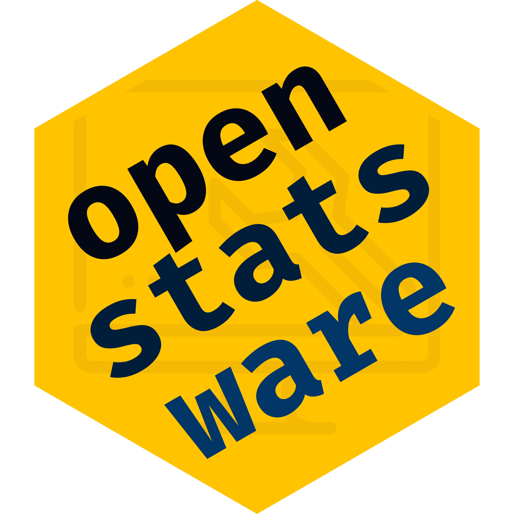

Introducing openstatsware
Who we are and what we build together
Daniel Sabanés Bové on behalf of
openstatsware
2024-10-30
Introducing openstatsware
openstatsware
- Formed on 19 August 2022
- Official working group of the American Statistical Association (ASA) Biopharmaceutical section (BIOP)
- Special Interest Group (SIG) of the European Federation of Statisticians in the Pharmaceutical Industry (EFSPI).
- Cross-industry collaboration (63 members from 41 organizations)
- Homepage: openstatsware.org
- We welcome new members to join!

Motivation
- Open-source software increasingly popular in Biostatistics
- Rapid uptake of novel statistical methods
- Unprecedented opportunities for collaboration
- Transparency of methods and implementation
- Variability in software quality
- No statistical quality assurance on open-source extension package repositories, e.g. CRAN
- No industry standard for assessing quality of R packages
- Reliable software for core statistical analyses is paramount
Our work
openstatsware objectives
Engineer selected packages to fill in gaps in the open-source statistical software landscape, and to promote software tools designed by the working group through publications, conference presentations, workshops, and training courses.
Develop good SWE practices for engineering high-quality statistical software and promote their use in the broader Biostatistics community via public training materials.
Communicate and collaborate with other R software initiatives including via the R Consortium.
Workstreams in Package Development
- Mixed Models for Repeated Measures (MMRM)
- Developed the
mmrmR package for frequentist inference in MMRM
- Developed the
- Bayesian MMRM
- Developed the
brms.mmrmR package for Bayesian inference in MMRM
- Developed the
- Health Technology Assessment (HTA)
- Developed the
maicplusR package for matching-adjusted indirect comparison (MAIC)
- Developed the
- Bayesian Safety Signal Detection
- Developed the
SafetySignalDetection.jlJulia package
- Developed the
Best Practices Dissemination - Workshop
- Workshop “Good Software Engineering Practice for R Packages” on world tour
- To teach hands-on skills and tools to engineer reliable R packages
- Topics: R package structure, engineering workflow, ensuring quality, version control, collaboration and publication, and shiny development
- 5 events in 2023 in Basel, Shanghai, San José, Rockville, and Montreal
- 4 events in 2024 in Zurich, Salzburg, Beijing, and this Monday online at R/Pharma APAC!
Best Practices Dissemination - openstatsguide
- Small and concise set of recommendations for package developers
- Opinionated, but aims to be based on experienced majority opinions
- Focus are developers, while users might find complementary “validation” frameworks valuable
- Primarily for statistical packages (not plotting, data wrangling, etc.)
- Generic principles which can be used across functional data science languages R, Python, and Julia
- Concrete tools are mentioned as examples
Outlook
Long Term Perspective
- Software engineering is a critical competence in producing high-quality statistical software
- A lot of work needs to be done regarding the establishment, dissemination and adoption of best practices for engineering open-source software
- Improving the way software engineering is done will help improve the efficiency, reliability and innovation within Biostatistics
Next Steps
- Join the Effective Statistician conference invited session organized by
openstatsware - We will relaunch the CRAN Task View on Clinical Trials
- We are considering to write a Shiny app development guide
Q&A